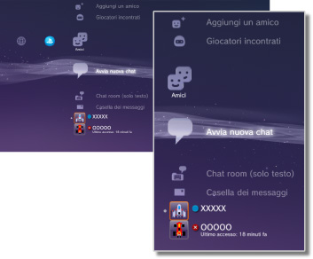

Amici > Categoria Amici
Categoria Amici
Per utilizzare questa funzione, potrebbe essere richiesto di aggiornare il software di sistema.
È possibile inviare o ricevere messaggi o utilizzare la chat con altri utenti PS3™ attraverso il PSNSM. Per utilizzare queste funzioni è necessario creare (iscrivere) un account Sony Entertainment Network. Sotto  (Amici) sono visualizzate le seguenti icone. Le icone visualizzate variano in base alle condizioni di utilizzo.
(Amici) sono visualizzate le seguenti icone. Le icone visualizzate variano in base alle condizioni di utilizzo.

 |
Elenco di blocco | Visualizza un elenco di persone nell'elenco di blocco. |
|---|---|---|
 |
Aggiungi un amico | Invia la richiesta dell'aggiunta di una persona all'elenco Amici. |
 |
Giocatori incontrati | Visualizza un elenco di persone con cui l'utente ha giocato online in formato PlayStation®3*. Selezionare questa icona per inviare un messaggio a un giocatore o richiedere l'aggiunta di un amico. |
 |
Avvia nuova chat | Consente di avviare una chat. |
 |
Chat room (solo testo) | Questa icona viene visualizzata quando è disponibile una chat room per una chat di testo. Se viene aggiunta una nuova chat room, compare il simbolo  . . |
 |
Stanza chat vocale/video | Questa icona viene visualizzata durante l'utilizzo di una chat vocale/video. |
 |
Casella dei messaggi | Crea nuovi messaggi e visualizza i messaggi ricevuti e inviati. |
 |
(ID online) | L'avatar selezionato per l'account viene visualizzato qui. |
|
(nome dell'amico) | Questa icona indica una persona nell'elenco Amici. Selezionando questa icona, è possibile scambiare messaggi o utilizzare la chat con gli amici. |
| * |
Alcuni giochi potrebbero non supportare questa funzione. |
|---|
Note
- Nel sistema PS3™, gli utenti che appartengono all'elenco Amici sono denominati "Amici". Inoltre, i messaggi e-mail inviati o ricevuti sotto (Amici) sono denominati "messaggi".
- È possibile aggiungere un massimo di 2.000 amici.
- Vengono visualizzati un massimo di 100 amici.
- Se si hanno più di 100 amici, è necessario uscire, quindi accedere di nuovo per aggiornare gli amici visualizzati. Durante questa operazione, disconnettere anche tutti gli altri dispositivi che hanno eseguito l'accesso a PSNSM.
- È possibile gestire i propri amici anche da dispositivi come sistemi PS4™ e PS Vita, smartphone o altri dispositivi con PlayStation®App installata.
- È possibile visualizzare fino a 50 giocatori in
 (Giocatori incontrati). Una volta raggiunto il limite, l'inserimento meno recente viene eliminato automaticamente ogni volta che si aggiunge un nuovo giocatore.
(Giocatori incontrati). Una volta raggiunto il limite, l'inserimento meno recente viene eliminato automaticamente ogni volta che si aggiunge un nuovo giocatore. - Per utilizzare la chat vocale è necessario un dispositivo di ingresso/uscita audio (come un auricolare, venduto separatamente). Per utilizzare la chat video, è inoltre necessaria una fotocamera USB (venduta separatamente).
- Sul sistema PS3™ è possibile utilizzare un auricolare USB / un auricolare Bluetooth® / una telecamera USB EyeToy™ / una PlayStation®Eye / una fotocamera USB compatibile con la classe video USB (UVC).
- Per collegare una fotocamera USB attraverso un hub USB, utilizzare un hub che supporti una USB 2.0. Se si utilizza un hub che non supporta una USB 2.0, potrebbe verificarsi una degradazione dell'immagine, oppure l'immagine potrebbe non essere visualizzata.
- Per informazioni sulle periferiche supportate e le istruzioni per l'uso, rivolgersi al rivenditore delle periferiche.